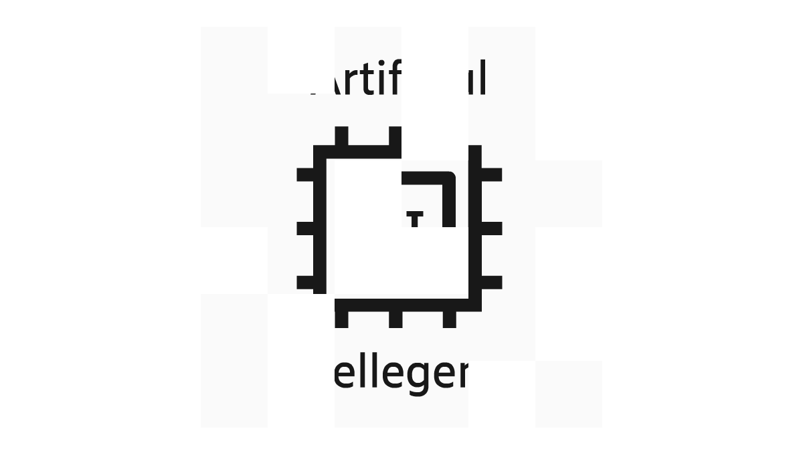
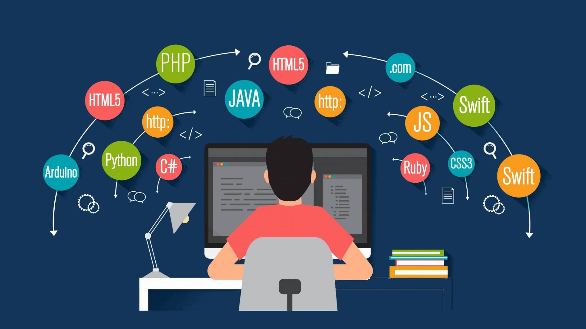

Hello.
I'm a senior studying computer engineering at Columbia University in the City of New York.
❗️Currently seeking for an internship opportunity for this coming Summer 2023❗️
My Skills.



Python Development
As a Python developer, I have gained valuable experience in data processing and visualization, working with libraries like NumPy, Pandas, and Matplotlib. I strive to write clean, efficient, and scalable code, following the best practices of software development. Additionally, I have some experience in competitive programming and participate in Codeforces contests to continuously improve my skills. I am also familiar with cloud computing platforms like AWS and their deployment of scalable applications.
Data Science & Machine Learning
With a focus on Python development, data analytics, and software engineering, I have developed skills in data science and machine learning. I am proficient in using Python APIs to access, clean, and analyze data, and have implemented machine learning algorithms using libraries such as NumPy, Pandas, scikit-learn, TensorFlow, and PyTorch. My experience includes developing algorithms for financial data analysis and decision-making and exploring cloud technologies for scalable solutions to complex problems. I have some experience in transferring and migrating data between various databases, including MySQL, MongoDB, and Neo4j. My education at Columbia University provided me with a strong foundation in data science, enabling me to develop innovative solutions using programming languages like Python.
Get In Touch
Let's discuss how I can contribute to your organization!
Contact me through the methods below if my website's skillsets match your position requirements.